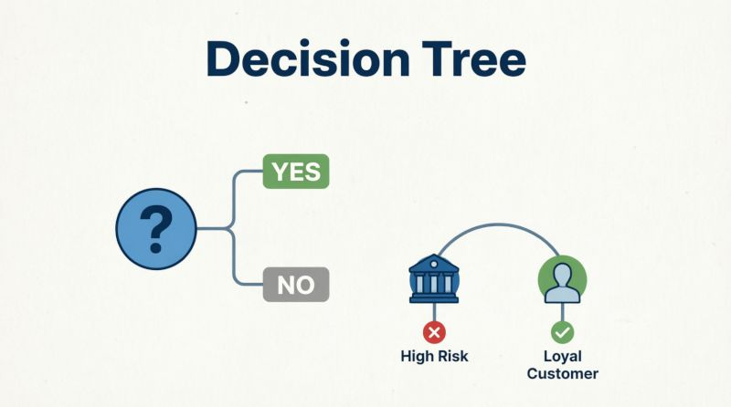

سایر بخشهای این سلسله مقالات را از دست ندهید:
کدام مدل هوش مصنوعی برای کدام مسئله مناسب است؟ - بخش اول (Naive Bayes)
کدام مدل هوش مصنوعی برای کدام مسئله مناسب است؟ - بخش دوم (رگرسیون)
کدام مدل هوش مصنوعی برای کدام مسئله مناسب است؟ بخش سوم(SVM)
کدام مدل هوش مصنوعی برای کدام مسئله مناسب است؟-بخش چهارم (درخت تصمیم-جنگل تصادفی)
کدام مدل هوش مصنوعی برای کدام مسئله مناسب است؟ - بخش پنجم(K-means)
کدام مدل هوش مصنوعی برای کدام مسئله مناسب است؟ بخش ششم و آخر(KNN)
پس از بررسی الگوریتمها و مدلهای کلاسیک مانند Naive Bayes، رگرسیون خطی و لجستیک و ماشین بردار پشتیبان (SVM) — که همگی بر پایه محاسبات ریاضی پیوسته، احتمالات یا مرزبندی هندسی عمل میکردند — در این بخش به سراغ خانوادهای متفاوت اما بسیار کاربردی از مدلهای هوش مصنوعی میرویم: درخت تصمیم (Decision Tree) و جنگل تصادفی (Random Forest).
این دو مدل نه تنها از نظر ساختاری با مدلهای قبلی متفاوت هستند، بلکه از نظر تفسیرپذیری، انعطافپذیری و مقاومت در برابر دادههای نویزی نیز مزیتهای منحصربهفردی دارند. در حالی که SVM یک «مرز هوشمند» میسازد و رگرسیون لجستیک یک «احتمال خطی» تولید میکند، درخت تصمیم شبیه به یک فلوچارت تصمیمگیری انسانی عمل میکند: سوال پشت سوال، تا رسیدن به جواب نهایی. جنگل تصادفی هم دقیقاً همین کار را انجام میدهد — اما با صدها درخت موازی، تا خطای تکدرخت را جبران کند و دقت را به حداکثر برساند.

در ادامه، ابتدا منطق سادهٔ درخت تصمیم را با یک مثال کاربردی (تشخیص ریزش مشتری در بانک) توضیح میدهیم، سپس نشان میدهیم چگونه جنگل تصادفی با ترکیب دهها یا صدها درخت، مدلی میسازد که نه تنها دقیقتر است، بلکه در برابر دادههای پرت و نویزدار هم مقاومتر عمل میکند. همچنین به مقایسهٔ این دو مدل با مدلهای قبلی میپردازیم و مشخص میکنیم چه زمانی باید از درخت/جنگل استفاده کرد.
درخت تصمیم (Decision Tree) چیست؟
درخت تصمیم مانند یک فلوچارت یا بازی «۲۰ سؤالی» عمل میکند. از ریشه (کل دادهها) شروع میکند و در هر گره، با پرسیدن یک سوال ساده بر اساس یک ویژگی (مثلاً «آیا سن بیشتر از ۳۰ است؟»)، دادهها را به دو شاخه «بله» و «خیر» تقسیم میکند. این کار آنقدر تکرار میشود تا به برگها برسیم که پاسخ نهایی (مثلاً «خرید میکند» یا «نمیخرد») است. مزیت بزرگ آن این است که کاملاً قابل مشاهده و تفسیر است و میتوان کل مسیر تصمیم را مثل یک داستان دنبال کرد.
مثال کاربردی: تشخیص ریزش مشتری در بانک
بانکی میخواهد مشتریانی که قصد دارند حساب خود را ببندند را شناسایی کند. درخت تصمیم با بررسی تاریخچه مشتریان قبلی، الگوها را یاد میگیرد:
۱. سوال اول (ریشه): آیا موجودی حساب کمتر از ۵۰۰ هزار تومان است؟
-
بله: به شاخه چپ برو ← سوال دوم: آیا در ماه اخیر تماس با پشتیبانی داشته است؟
-
بله: پیشبینی = «احتمال ریزش بالا» (برگ)
-
خیر: پیشبینی = «احتمال ریزش متوسط» (برگ)
-
-
خیر: به شاخه راست برو ← سوال دوم: آیا تعداد تراکنشهای ماهانه کمتر از ۳ است؟
-
بله: پیشبینی = «احتمال ریزش بالا» (برگ)
-
خیر: پیشبینی = «مشتری وفادار» (برگ)
اینجا مدل بدون فرمول پیچیده، با قوانین اگر-آنگاه تصمیم میگیرد.
-
مراحل الگوریتم درخت تصمیم
ایجاد مدل درخت تصمیم با استفاده از داده های آموزشی در فرایند زیر خلاصه شده است:
۱. جمعآوری دادههای آموزشی
گام اول مانند سایر روشها جمع آوری دادههای آموزشی است. بانک ابتدا تاریخچهٔ صدها یا هزاران مشتری قبلی را جمعآوری میکند که هر کدام برچسب دارند:
-
«حساب بسته شده»
-
«حساب فعال»
همراه با ویژگیهایی مثل: موجودی، تعداد تراکنش، تماس با پشتیبانی، مدت عضویت و غیره.
۲. انتخاب بهترین سوال برای شروع (ریشهٔ درخت)
الگوریتم تمام ویژگیها را بررسی میکند و میپرسد:
«کدام سوال را اگر اول بپرسم، بیشترین تفکیک بین مشتریان ریزشی و وفادار ایجاد میشود؟»
مثلاً متوجه میشود که پرسیدن «آیا موجودی کمتر از ۵۰ هزار تومان است؟» بهتر از سایر سوالات دو گروه را از هم جدا میکند → پس این میشود سوال اول (ریشه).
۳. تقسیم دادهها بر اساس پاسخ
مشتریان به دو شاخه تقسیم میشوند:
-
شاخهٔ چپ: کسانی که موجودیشان کمتر از ۵۰ هزار تومان است
-
شاخهٔ راست: کسانی که موجودیشان بالای ۵۰ هزار تومان است
حالا الگوریتم داخل هر شاخه دوباره همین کار را تکرار میکند: «داخل این گروه، کدام سوال بعدی بهترین تفکیک را ایجاد میکند؟»
۴. تکرار تا رسیدن به برگها (نتیجه نهایی)
این فرآیند ادامه مییابد تا جایی که:
-
یا همهٔ مشتریان یک شاخه همنوع باشند (همه ریزشی یا همه وفادار)
-
یا به حداکثر عمق مجاز درخت برسیم (برای جلوگیری از پیچیدگی بیش از حد)
هر نقطهٔ پایانی یک برگ است که پیشبینی نهایی را نشان میدهد: «ریزش بالا»، «ریزش متوسط»، «وفادار».
۵. استفاده از درخت برای مشتریان جدید
وقتی مشتری جدیدی وارد سیستم میشود، مدل فقط کافی است سوالات درخت را یکییکی بپرسد و طبق مسیر پاسخها، به یک برگ برسد و پیشبینی کند.
مثال:
-
موجودی = ۳۰۰ هزار → بله → تماس با پشتیبانی = دارد → پیشبینی: «ریزش بالا»
درخت تصمیم یکی از مدلهای محبوب است چراکه: -
قابل فهم است: حتی افراد غیرفنی نیز میتوانند منطق آن را دنبال کنند.
-
به نرمالسازی نیازی ندارد: برخلاف SVM یا رگرسیون، نیازی به تبدیل مقیاس دادهها ندارد.
-
در پیشبینی نتیجه سریع است:: فقط چند شرط if-else را اجرا میکند.
-
برای دادههای ترکیبی قابل استفاده است: هم عددی، هم دستهای (مثل جنسیت، شهر، نوع شغل).
یک درخت تصمیم تنها، هرچند ساده و قابل فهم است، اما یک ضعف بزرگ دارد: ممکن است بیشبرازش (Overfitting) کند. بیشبرازش به چه معنی است؟ یعنی مدل آنقدر دقیق جزئیات دادههای آموزشی را حفظ میکند که مثل دانشآموزی است که فقط جواب سوالات امتحان سال قبل را حفظ کرده، اما مفهوم را نفهمیده است. وقتی سوال جدیدی (دادهٔ جدید) میآید، گیج میشود و اشتباه پاسخ میدهد. راهحل این مشکل چیست؟ استفاده از جنگل تصادفی — که صدها درخت میسازد و نتیجهٔ نهایی را با رأیگیری تعیین میکند.
به همان مثال واقعی درحوزه بانک توجه کنید:
فرض کنید در دادههای آموزشی، بطور تصادفی همهٔ مشتریانی که «نامشان با حرف م شروع میشد» و «موجودیشان زیر ۵۰۰ هزار تومان بود»، حسابشان را بسته بودند.
درخت تصمیمِ تکدرختی ممکن است قانونی عجیب مثل این بسازد:
«اگر نام با ‘م’ شروع شد و موجودی < ۵۰۰ هزار بود → ریزش بالا»
این قانون برای دادههای قدیمی درست کار کرده است، اما برای مشتری جدیدی به نام «مریم» با موجودی کمتر از ۵۰۰ هزار تومان، پیشبینی غلط میشود—چون نام او ربطی به رفتار مالیاش ندارد! این همان بیشبرازش است: یادگیری نویز به جای الگو.
چنانکه گفتیم راهحل استفاده از جنگل تصادفی (Random Forest) است: جنگل تصادفی نمیگذارد یک درختِ مغرور، همهٔ تصمیمها را بتنهایی بگیرد. بلکه صدها یا حتی هزاران درخت کوچک میسازد و از آنها رأیگیری میکند.
مراحل ساخت جنگل تصادفی
برای ساخت مدل جنگل تصادفی گامهای ذیل طی میشود:
۱. ساخت درختهای متنوع:
الگوریتم صدها درخت میسازد، اما هر درخت را با شرایط کمی متفاوت آموزش میدهد:
-
هر درخت فقط روی بخشی تصادفی از دادههای آموزشی تمرکز میکند (نه همهٔ دادهها).
-
هر درخت فقط به بخشی تصادفی از ویژگیها نگاه میکند (مثلاً یکی فقط به موجودی و تراکنش توجه میکند، دیگری به تماس با پشتیبانی و مدت عضویت).
۲. پیشبینی مستقل هر درخت:
وقتی مشتری جدیدی میآید، هر درخت جداگانه پیشبینی میکند:
-
درخت ۱: «ریزش بالا»
-
درخت ۲: «وفادار»
-
درخت ۳: «ریزش بالا»
-
…
-
درخت ۱۰۰: «ریزش متوسط»
۳. رأیگیری نهایی:
نتیجهٔ نهایی آن چیزی است که اکثر درختها گفتهاند. اگر ۷۰ تا از ۱۰۰ درخت گفتند «ریزش بالا»، مدل نهایی هم همین را اعلام میکند.
با توجه به مثال مطرح شده در مورد مشکل بیش برازش ممکن است این پرسش در ذهن خواننده شکل گرفته باشد که اگر بجای استفاده از جنگل تصادفی ویژگیها را بصورت دستی محدود کنیم یعنی ویژگیهایی که در نتیجه نهایی و ارزیابی نهایی مؤثر نیستند را حذف کنیم -به عنوان مثال نام و نام خانوادگی مشتری را از لیست ویژگیها در داده های آموزشی خارج کنیم- آیا مشکل بیش برازش حل نمی شود؟
این پرسش بسیار هوشمندانه و دقیقی است! و پاسخ کوتاه آن این است که: بله، تا حد زیادی کمک میکند، اما مشکل را بهطور کامل حل نمیکند. در ادامه به تفاوت بسیار مهم این دو روش با ذکر همان مثال بانک میپردازیم:
حذف دستی ویژگیهای بیربط (Feature Selection)
اگر شما «نام»، «نام خانوادگی» یا «شماره ملی» را از دادهها حذف کنید، قطعاً جلوی آن خطای فاحش (یادگیری نام با حرف ‘م’) را میگیرید. این کار بسیار ضروری است و اولین قدم در هر پروژهٔ هوش مصنوعی محسوب میشود.
اما چرا کافی نیست؟
چون «بیشبرازش» (Overfitting) فقط ناشی از ویژگیهای آشکارا بیربط نیست؛ بلکه اغلب ناشی از یادگیری الگوهای تصادفی و پیچیده در ویژگیهای بهظاهر مرتبط است.
به یک مثال واقعیتر از بیشبرازش بدون ویژگیهای بیربط توجه کنید:
فرض کنید نام و نام خانوادگی را حذف کردهاید و فقط ویژگیهای مالی را نگه داشتهاید:
-
موجودی
-
تعداد تراکنش
-
میانگین زمان بین تراکنشها
در دادههای آموزشی، ممکن است بطور تصادفی تمام مشتریانی که «دقیقاً ۳ روز قبل از تعطیلات نوروز» حسابشان را بستهاند، دارای «میانگین زمان بین تراکنش = ۴.۵ ساعت» بودهاند.
یک درخت تصمیمِ تکدرختی ممکن است قانونی مثل این بسازد:
«اگر میانگین زمان بین تراکنش دقیقاً ۴.۵ ساعت بود → ریزش بالا»
البته این قانون برای دادههای قدیمی درست است، اما یک تصادف آماری است، نه یک الگوی واقعی. اگر مشتری جدیدی با همین مشخصات بیاید ولی ربطی به نوروز نداشته باشد، مدل اشتباه پیشبینی میکند. حذف نام خانوادگی جلوی این نوع بیشبرازش را نمیگیرد، چون ویژگی «زمان بین تراکنش» کاملاً معتبر و مرتبط به نظر میرسد.
جنگل تصادفی چگونه مشکل را حل میکند؟
جنگل تصادفی (Random Forest) علاوه بر اینکه از صدها درخت رأیگیری میکند، دو مکانیزم داخلی دارد که مستقیماً با بیشبرازش مبارزه میکنند، حتی اگر تمام ویژگیها مرتبط باشند:
۱. نمونهبرداری تصادفی از دادهها (Bagging): هر درخت فقط بخشی از مشتریان را میبیند. بنابراین، آن تصادف خاص (مشتریان نوروزی با زمان ۴.۵ ساعت) در همهٔ درختها تکرار نمیشود. برخی درختها این الگو را میبینند، برخی نه. در رأیگیری نهایی، اثر آن خنثی میشود.
۲. انتخاب تصادفی ویژگیها در هر گره: حتی اگر ویژگی «زمان بین تراکنش» مهم باشد، در هر شاخهسازی، الگوریتم ممکن است اصلاً به آن نگاه نکند و از ویژگی دیگری استفاده کند. این باعث میشود درختها متنوع شوند و روی یک ویژگی خاص وسواس پیدا نکنند.
و البته بهترین استراتژی ترکیب هر دو روش است!
ابتدا با دانش تخصصی یا تحلیل داده، ویژگیهای آشکارا بیربط (مثل نام، کد پستی غیرمرتبط، ID یکتا) را حذف دستی میکنیم. این کار کیفیت داده را بالا میبرد و سرعت آموزش را افزایش میدهد.
سپس از جنگل تصادفی استفاده میکنیم تا الگوهای پیچیده و غیرخطی را یاد بگیرد و در عین حال، در برابر بیشبرازش ناشی از تصادفات آماری در ویژگیهای باقیمانده مقاوم باشد.
مثال : شناسایی ریسک انصراف دانشجویان
در ادامه به بررسی چگونگی استفاده از درخت تصمیم به منظور شناسایی ریسک انصراف دانشجویان میپردازیم. هدف از این مدلسازی، پیشبینی زودهنگام دانشجویانی است که در معرض خطر ترک تحصیل قرار دارند، تا دانشگاه بتواند پیش از آنکه دیر شود، مداخلات حمایتی لازم (مانند مشاوره تحصیلی، کمکهزینه مالی یا برنامههای انگیزشی) را ارائه دهد.
هر دانشجو: یک نقطه در فضای چندبعدی
در این مدل، هر دانشجو دیگر فقط یک نام در لیست نیست، بلکه یک نقطه در فضای چندبعدی است. هر ویژگی (متغیر) یک «بعد» از این فضا را تشکیل میدهد و ترکیب تمام این ابعاد، «پروفایل دیجیتال» دانشجو را میسازد. برای مثال، ممکن است از ویژگیهای زیر استفاده کنیم:
-
عملکرد تحصیلی: میانگین نمرات ترمهای قبلی، میانگین نمرهٔ تکالیف و پروژهها، تعداد دروس ردشده یا مشروطی.
-
رفتار آموزشی: درصد حضور در کلاسها، میزان مشارکت در فعالیتهای علمی یا فرهنگی دانشگاه.
-
وضعیت مالی: دریافت بورسیه یا وام، میزان بدهی در شهریه، تأخیر در پرداخت، دفعات درخواست استمهال در پرداخت بدهی.
-
شرایط شخصی و اجتماعی: فاصلهٔ جغرافیایی محل سکونت از دانشگاه، سابقهٔ مشاورهٔ روانشناختی.
-
ردپای دیجیتال: دادههای رفتاری از سیستمهای یادگیری آنلاین (مانند زمان ورود به پلتفرم، تعداد بازدید از جزوات، آخرین زمان فعالیت در سامانه).
چگونه درخت تصمیم از این دادهها یاد میگیرد؟
الگوریتم درخت تصمیم با بررسی هزاران دانشجوی قبلی (که سرنوشت آنها مشخص است: فارغالتحصیل شدهاند یا انصراف دادهاند)، به دنبال الگوهای پنهان میگردد. او سوالاتی را طراحی میکند که بیشترین تفکیک را بین دانشجویان موفق و در معرض خطر ایجاد کند.
به نمونه زیر از ساختار درختی که آموخته شده است توجه کنید:
فرض کنید مدل پس از آموزش، درختی با قوانین زیر ساخته است:
۱. سوال ریشه (مهمترین عامل): آیا دانشجو بیش از ۳ ماه تأخیر در پرداخت شهریه دارد؟
-
بله: به شاخه «ریسک بالا» میرود.
-
خیر: به سوال بعدی میرود.
۲. سوال دوم: آیا میانگین نمرات زیر ۱۲ است؟
-
بله: به سوال سوم میرود.
-
خیر: پیشبینی = «ریسک پایین» (دانشجو احتمالاً ادامه میدهد).
۳. سوال سوم: آیا در ۳۰ روز گذشته هیچ فعالیتی در سامانه آنلاین نداشته است؟
-
بله: پیشبینی = «ریسک بسیار بالا - نیاز به مداخله فوری»
-
خیر: پیشبینی = «ریسک متوسط - نیاز به پیگیری»
مسیر یک دانشجوی فرضی در درخت
حالا اگر دانشجوی جدیدی به نام «سارا» وارد سیستم شود با این مشخصات:
-
تأخیر در شهریه: ندارد (۰ ماه)
-
میانگین نمرات: ۱۱
-
فعالیت آنلاین: ۴۵ روز پیش
مدل مسیر زیر را طی میکند:
۱. تأخیر شهریه؟ → خیر (عبور از ریسک مالی فوری)
۲. نمرات زیر ۱۲؟ → بله (هشدار تحصیلی)
۳. فعالیت آنلاین در ۳۰ روز اخیر؟ → خیر (هشدار رفتاری)
نتیجه نهایی درخت: سارا در دسته «ریسک بسیار بالا» قرار میگیرد و سیستم به طور خودکار به مشاور دانشگاه هشدار میدهد که با او تماس بگیرد.
چرا درخت تصمیم میتواند برای دانشگاهها گزینهای ایدهآل باشد؟
برخلاف مدلهای «جعبه سیاه» مانند شبکههای عصبی پیچیده، درخت تصمیم کاملاً شفاف و قابل تفسیر است. وقتی سیستم هشداری صادر میکند، مشاور دانشگاه دقیقاً میداند چرا این هشدار صادر شده است (مثلاً: «چون هم نمراتش افت کرده و هم دیگر وارد سامانه نمیشود»). این شفافیت به دانشگاه اجازه میدهد تا مداخله هدفمند انجام دهد:
-
اگر مشکل مالی است → ارجاع به صندوق رفاه.
-
اگر مشکل تحصیلی است → معرفی به کلاسهای تقویتی.
-
اگر مشکل انگیزشی است → جلسات مشاوره روانشناسی.
در بخش بعدی این سلسله مقالات به بررسی الگوریتم K-means میپردازیم.
سایر بخشهای این سلسله مقالات را از دست ندهید:
کدام مدل هوش مصنوعی برای کدام مسئله مناسب است؟ - بخش اول (Naive Bayes) کدام مدل هوش مصنوعی برای کدام مسئله مناسب است؟ - بخش دوم (رگرسیون)
کدام مدل هوش مصنوعی برای کدام مسئله مناسب است؟ بخش سوم(SVM) کدام مدل هوش مصنوعی برای کدام مسئله مناسب است؟-بخش چهارم (درخت تصمیم-جنگل تصادفی) کدام مدل هوش مصنوعی برای کدام مسئله مناسب است؟ - بخش پنجم(K-means) کدام مدل هوش مصنوعی برای کدام مسئله مناسب است؟ بخش ششم و آخر(KNN)